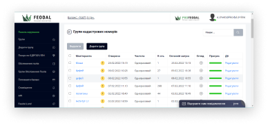
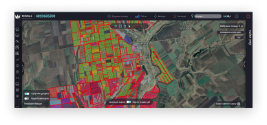
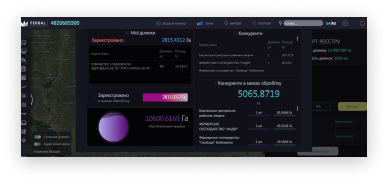
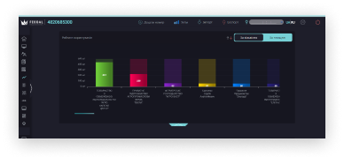

З 2019 року
на ринку400+ аудитів
територіальних громад1000+ аудитів
фермерамКОРОТКО ПРО НАС
Наша місія - це розвиток і розширення земельного банку фермерів, наповнення бюджету територіальних громад через ефективне управління земельними активами, а також зменшення карбонового сліду при раціональному використанні ресурсів.
Зараз нашою системою користуються майже в кожній області України.
Щоквартально ми створюємо новий функціонал для користувачів і поліпшуємо зручність використання системи.